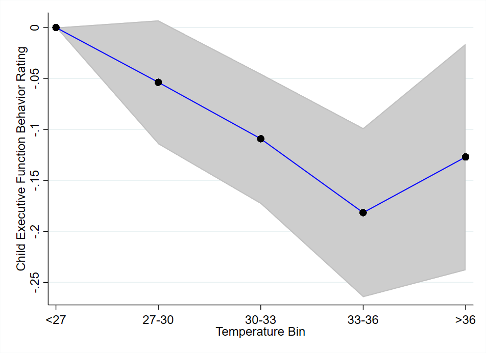

Download
Abstract
This paper examines the effect of heat on children’s executive function behavior in Ghana. Executive function behavior reflects the ability to stay focused regardless of external stimuli. Heat may act as a stimulus and affect executive function behavior through changes in brain chemistry and functioning, leading to decreases in attention, memory, information retention and processing. Using rich longitudinal data on children, this paper estimates child fixed-effects models to obtain the contemporaneous effect of temperature on executive function behavior and tests scores. The results suggest that a deviation from the reference temperature bin (24-26°C) decreases children’s executive function. Specifically, at 33-35°C, these results correspond to an increase in the likelihood of being never attentive. The paper also finds that relatively poorer children are more affected. There is no effect on test scores, but since exam are not timed, test scores could reflect both skills and effort in this context.
Effects of Heat on Child Executive Function Behavior
